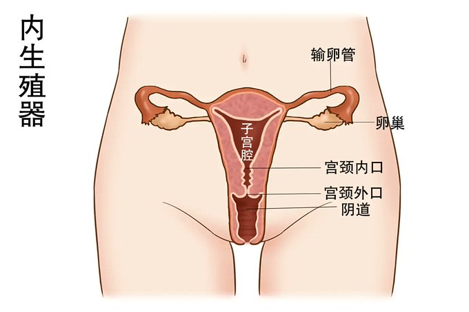

星野ふじ
@hoshinofujivy

星野ふじ
@hoshinofujivy
更正一下：在女性排卵期，精液进入阴道，在输卵管完成受精，随后受精卵开始分裂，一遍分裂一遍转移到子宫，在子宫腔完成着床，进一步分化，发育
也就是说，男生的精子要游经阴道，子宫腔，才能与卵子见面，对精子的活性要求很高 https://t.co/6KFGxrxTVS https://t.co/VZ4uOlDJAv
星野ふじ
@hoshinofujivy
生理知识：子宫口平时都是封闭的，精子都很难进入，即使是女性排卵期也有宫颈粘液阻挡子宫口及整个宫颈，精液几乎不会流入子宫内，都是残留在阴道穹窿和阴道壁褶皱内